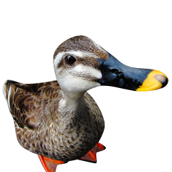

<mat-toolbar  class="header-container">
    <div class="justify-content-start">
        <div class="options-menu">
            
            <h3 class="title-header">Feed The Ducks!</h3>
        </div>
    </div>
    <div class="lang-container">
        <div class="options-menu">

            <app-lang-selector></app-lang-selector>
            <mat-menu #systems="matMenu">
                <button mat-menu-item (click)="goToReports()" style="outline: none;">
                    <mat-icon>assignment</mat-icon> {{'app.report' | translate}}
                </button>
                <button mat-menu-item (click)="goToFeedData()" style="outline: none;">
                    <mat-icon>add</mat-icon> {{'app.feeder' | translate}}
                </button>
            </mat-menu>

            <button class="profile-border" mat-stroked-button [matMenuTriggerFor]="systems"
                matTooltip="{{'app.options' | translate}}" style="outline: none;">
                <mat-icon class="material-icons-outlined">apps</mat-icon>
            </button>

        </div>
    </div>
</mat-toolbar>